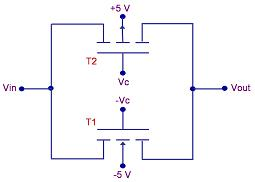

Analog
Switches
An
Analog Switch
is a solid-state semiconductor device that has one or more
channels
that can
transmit
analog signals when they're in the 'on' state or
block
them when
they're in the 'off' state. The turning 'on' and 'off' of an analog switch is
controlled by a
digital
gating signal
applied to its control gate. Applications of analog
switches include data acquisition, process control, instrumentation,
video systems, and communication systems.
An
ideal
analog switch has zero resistance when 'on' (or closed), and
infinite resistance when 'off' (or open). It also has a
perfectly linear volt-ampere characteristic when transmitting an analog
signal. Of course,
analog switches of the real world are not 'ideal'. Being solid-state
semiconductor devices,
real
analog switches exhibit
non-zero 'on' resistance, a finite 'off' resistance, and a non-linear
volt-ampere characteristic.
Just like mechanical
switches, analog switches come in a variety of forms, depending on the
number of
poles
and throws
they offer. Thus, terms such
as 'SPST' and 'SPDT' (single-pole single throw and single-pole
double-throw, respectively) which are commonly used to describe
mechanical switches are also applicable to analog switches. A
single IC package can also have multiple switches in it, each of which
corresponds to an analog channel.
There are
many circuit configurations that can be used as gates for
analog switches, some of which are very simple, e.g., consisting of just
a single diode and several resistors. Most commercially available
analog switches though employ well-engineered bipolar transistors, field-effect transistors (FET's),
or a combination of both
in their channels for the transmission or blocking of analog signals.
FET's
are widely
used in analog switches because of their high 'off' resistance and low
'on' resistance. Figure 1 shows a simplified CMOS analog switch circuit.
|
 |
|
Figure 1.
A simple CMOS analog switch |
The circuit
in Figure 1 employs
complementary
MOSFETs
(CMOS) consisting of an n-channel MOSFET and a p-channel MOSFET, both of
which are connected such that their source terminals are on opposite
sides of the circuit (i.e., one is on the input side and the other is on
the output side). It then follows that their drain terminals are also on
opposite sides of the circuit. Also, note that the control
voltages at the gates of the transistors are
digital
(in this case, '1' means +5V and '0' means -5V) and
complementary.
The effect of
this entire configuration is that one value of Vc will turn
both
transistors 'off' and the other value of Vc
will turn
at least one
transistor 'on'. In the latter case, which transistor is
conducting depends on the current value of analog input Vin. The analog
switch is 'off' if both transistors are 'off', and it is 'on' if at
least one of the transistors is 'on.'
See also:
Analog
Switch Performance Parameters;
Logic Gates
HOME
Copyright
©
2005
www.EESemi.com.
All Rights Reserved.